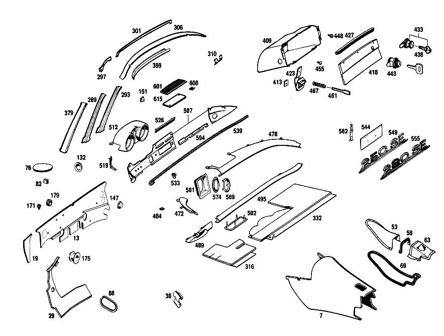

| № | Артикул | Название | Кол. | Примечание | Ограничение |
|---|---|---|---|---|---|
| 7 | A 108 682 01 07 | ШУМОИЗОЛЯЦИЯ | 1 | ТУННЕЛЬ КП СПЕРЕДИ Коробка передач [001] UP TO CHASSIS 002863 EXCEPT FOR 002123,002193,002327,002402,002539,002546,002726,002731,002744,002748,002757,002760,002763,002797,002862 | |
| 13 | A 111 682 66 20 | ИЗОЛЯЦИЯ | 1 | IN COWL, ENGINE COMPARTMENT Рулевое управление: Влево | |
| 19 | A 111 682 65 20 | ИЗОЛЯЦИЯ | - | Рулевое управление: Влево | |
| 19 | A 000 983 29 91 | ПАПКА | 1 | LEFT OUTSIDE, IN COWL, ENGINE COMPARTMENT Рулевое управление: Влево | |
| 38 | A 110 687 00 45 | КОЛПАЧОК | 1 | OVER KICK\-DOWN SWITCH Рулевое управление: ВправоАвтоматическая коробка переключения передач | |
| 53 | A 111 683 51 36 | ПАНЕЛЬ | 1 | [001] UP TO CHASSIS 002863 EXCEPT FOR 002123,002193,002327,002402,002539,002546,002726,002731,002744,002748,002757,002760,002763,002797,002862 | |
| 58 | A 111 683 53 98 | УПЛОТНИТЕЛЬ | 1 | [001] UP TO CHASSIS 002863 EXCEPT FOR 002123,002193,002327,002402,002539,002546,002726,002731,002744,002748,002757,002760,002763,002797,002862 | |
| 69 | A 111 680 50 73 | УПЛОТНИТЕЛЬ | 1 | FLOOR SHIFT COVER PLATE [001] UP TO CHASSIS 002863 EXCEPT FOR 002123,002193,002327,002402,002539,002546,002726,002731,002744,002748,002757,002760,002763,002797,002862 | |
| 88 | A 003 989 54 85 | Уплотнительная лента | 1 | KICK\-DOWN LINKAGE Автоматическая коробка переключения передач [001] UP TO CHASSIS 002863 EXCEPT FOR 002123,002193,002327,002402,002539,002546,002726,002731,002744,002748,002757,002760,002763,002797,002862 | |
| 104 | A 111 683 80 36 | Защитный колпачок | 2 | OVER REAR SHOCK ABSORBERS | |
| 108 | A 108 683 01 24 | НАКЛАДКА | 1 | LEFT IN LUGGAGE COMPARTMENT | |
| 113 | A 001 988 66 78 | СКОБА | 3 | ||
| 116 | A 111 680 82 75 | ПАНЕЛЬ | 1 | Туннель [026] 025 FROM CHASSIS 004830; 027 FROM CHASSIS 001219 | |
| 121 | A 110 987 00 39 | Пробка | - | 10mm | |
| 121 | A 000 997 33 20 | Запорная крышка | NB | WATER DRAIN HOLES IN FLOOR; 10 MM | |
| 125 | A 113 987 00 44 | Диск | NB | WATER DRAIN HOLES IN FLOOR; 20.5 MM | |
| 128 | A 000 990 13 22 | болт | 10 | 7/16" THREAD, TO PLUG THREADED HOLES | |
| 132 | A 110 987 05 44 | Запорная шайба | - | 32 MM | |
| 132 | A 000 997 40 20 | Запорная крышка | 2 | СТОЙКА ПЕРЕДНЕЙ СТЕНКИ; 30.5 MM | |
| 135 | A 110 987 06 44 | Запорная шайба | 2 | ЛОНЖЕРОН ЗАДН. | |
| 139 | A 111 997 12 81 | втулка | 2 | IN FLOOR RECESS | |
| 147 | A 110 987 08 44 | Диск | 1 | ПЕРЕГОРОДКА СПРАВА; 18.5 MM Рулевое управление: Влево | |
| 151 | A 000 987 04 15 | Пробка | 1 | IN WINDSHIELD WIPER MOTOR CUP | |
| 155 | A 110 987 01 44 | Запорная шайба | 1 | ANTENNA CABLE FRONT PANEL PILLAR | |
| 159 | A 110 987 10 44 | Диск | 1 | CROSS MEMBER AND REAR AXLE; 15.5 MM [027] 024/025 FROM CHASSIS 005150; 026/027 FROM CHASSIS 003780 | |
| 164 | A 110 987 14 44 | ДИСК | 1 | В ПОЛУ ЗАДНЕЙ ЧАСТИ КУЗОВА [028] 024/025 FROM CHASSIS 003549 ALSO INSTALLED ON 003479,003498,003516,003517,003519,003527,003540 | |
| 167 | A 110 987 12 44 | ДИСК | - | ||
| 167 | A 116 987 11 44 | ДИСК | 2 | В ПОЛУ СЗАДИ; 35 MM | |
| 171 | A 111 987 12 15 | ЗАГЛУШКА | - | ||
| 171 | A 000 987 18 40 | Резиновый буфер | NB | IN COWL, IN WATER TANK AND IN LUGGAGE COMPARTMENT FLOOR | |
| 175 | A 111 997 23 81 | КАБ. ВТУЛКА | - | ||
| 175 | A 008 997 17 81 | втулка | 1 | RADIO SET CABLE HARNESS,FIRE WALL | |
| 179 | A 000 997 28 81 | Проходная втулка | 1 | AT BOTTOM COVERING, для RADIATOR CIRCULATING AIR [002] FROM CHASSIS 002864 ALSO INSTALLED ON 002123,002193,002327,002402,002539,002546,002726,002731,002744,002748,002757,002760,002763,002797,002862 | |
| 182 | A 123 683 00 10 | Крышка | 2 | LUGGAGE COMPARTMENT COVERING | |
| 186 | A 110 683 02 10 | КРЫШКА | - | ||
| 186 | A 123 683 00 10 | Крышка | 2 | REAR FLOOR COVERING | |
| 190 | A 111 680 75 40 | НАСТИЛ | 1 | Рулевое управление: ВлевоКоробка передач [001] UP TO CHASSIS 002863 EXCEPT FOR 002123,002193,002327,002402,002539,002546,002726,002731,002744,002748,002757,002760,002763,002797,002862 [012] STATE COLOR NUMBER WHEN ORDERING | |
| 197 | A 111 680 64 40 | НАСТИЛ | 1 | Рулевое управление: Влево [001] UP TO CHASSIS 002863 EXCEPT FOR 002123,002193,002327,002402,002539,002546,002726,002731,002744,002748,002757,002760,002763,002797,002862 [012] STATE COLOR NUMBER WHEN ORDERING | |
| 205 | A 115 987 00 42 | ПРОСТАВКА | - | ||
| 209 | A 000 988 14 80 | Кнопка | 6 | [001] UP TO CHASSIS 002863 EXCEPT FOR 002123,002193,002327,002402,002539,002546,002726,002731,002744,002748,002757,002760,002763,002797,002862 | |
| 213 | A 136 988 09 81 | Кнопка-застежка | - | ||
| 213 | A 000 988 84 81 | Кнопка-застежка | 6 | ||
| 217 | A 111 680 65 45 | НАСТИЛ | 1 | Рулевое управление: Влево [001] UP TO CHASSIS 002863 EXCEPT FOR 002123,002193,002327,002402,002539,002546,002726,002731,002744,002748,002757,002760,002763,002797,002862 [012] STATE COLOR NUMBER WHEN ORDERING | |
| 230 | A 111 990 10 40 | Диск | 4 | ||
| 233 | A 136 988 09 81 | Кнопка-застежка | - | ||
| 233 | A 000 988 84 81 | Кнопка-застежка | 4 | ||
| 241 | A 111 680 53 47 | НАСТИЛ | 1 | [001] UP TO CHASSIS 002863 EXCEPT FOR 002123,002193,002327,002402,002539,002546,002726,002731,002744,002748,002757,002760,002763,002797,002862 [012] STATE COLOR NUMBER WHEN ORDERING | |
| 245 | A 111 684 85 09 | НАСТИЛ | 1 | REAR VERTICAL PLATE, LEFT [012] STATE COLOR NUMBER WHEN ORDERING | |
| 248 | A 108 684 01 05 | НАСТИЛ | 1 | ПОЛ БАГАЖНОГО ОТДЕЛЕНИЯ | |
| 251 | A 110 684 05 06 | НАСТИЛ | 1 | RECESS IN LUGGAGE COMPARTMENT | |
| 255 | A 111 686 53 45 | НАКЛАДКА | 1 | ЛОНЖЕРОН ВНЕШНИЙ СЛЕВА | |
| 260 | A 111 686 51 20 | ПЛАНКА | 1 | ВНИЗУ СЛЕВА | |
| 265 | A 111 686 51 36 | ПЛАНКА | 1 | ENTRANCE, LEFT INSIDE | |
| 269 | A 111 686 51 28 | Обшивка | 1 | СЛЕВА | |
| 273 | A 000 987 50 70 | резиновый профиль | 0 | BETWEEN SIDE MEMBERS AND ORNAMENTAL COVERS [047] ЗАКАЗЫВАТЬ ПОГОННЫМИ МЕТРАМИ | |
| 273 | A 000 987 50 70 | - резиновый профиль | 6 | ПЕРЕГОРОДКА, СНИЗУ СПРАВА 360 MM | |
| 273 | A 000 987 50 70 | - резиновый профиль | 4 | 60 MM | |
| 276 | A 000 987 68 51 | УПЛОТН. РЕЗИНА | 2 | 1867 MM BETWEEN ORNAMENTAL COVERS AND RAILS [047] ЗАКАЗЫВАТЬ ПОГОННЫМИ МЕТРАМИ | |
| 280 | A 000 983 24 87 | НАПОЛЬНОЕ ПОКРЫТИЕ | 2 | ENTRANCE RIBBED RUBBER 4 X 97 X 1085 MM [047] ЗАКАЗЫВАТЬ ПОГОННЫМИ МЕТРАМИ [015] WHEN ORDERING, STATE COLOR NUMBER AND DIMENSIONS | |
| 293 | A 111 688 83 39 | Обшивка | 1 | СБОКУ ВНУТРИ СЛЕВА | |
| 297 | A 111 688 81 39 | Обшивка | 1 | ВНУТРИ СЛЕВА | |
| 301 | A 111 688 80 39 | Обшивка | 1 | ВНУТРИ В ЦЕНТРЕ | |
| 306 | A 111 688 80 40 | Обшивка | 1 | СНАРУЖИ | |
| 310 | A 111 688 85 39 | Обшивка | 2 | ПОД НАПРАВЛЯЮЩЕЙ ОПОРОЙ | |
| 316 | A 111 680 64 17 | ПАНЕЛЬ | 1 | BELOW INSTRUMENT PANEL, LEFT Рулевое управление: Влево [001] UP TO CHASSIS 002863 EXCEPT FOR 002123,002193,002327,002402,002539,002546,002726,002731,002744,002748,002757,002760,002763,002797,002862 | |
| 321 | A 111 680 03 17 | ПАНЕЛЬ | - | Рулевое управление: Влево | |
| 321 | A 109 680 29 17 | ПАНЕЛЬ | 1 | BELOW INSTRUMENT PANEL, LEFT OUTSIDE Рулевое управление: Влево [012] STATE COLOR NUMBER WHEN ORDERING | |
| 326 | A 111 680 06 17 | ПАНЕЛЬ | 1 | BELOW INSTRUMENT PANEL, RIGHT OUTSIDE CODE C01 Рулевое управление: Вправо [012] STATE COLOR NUMBER WHEN ORDERING | |
| 332 | A 111 680 52 17 | ПАНЕЛЬ | 1 | BELOW INSTRUMENT PANEL, RIGHT Рулевое управление: Влево [001] UP TO CHASSIS 002863 EXCEPT FOR 002123,002193,002327,002402,002539,002546,002726,002731,002744,002748,002757,002760,002763,002797,002862 | |
| 338 | A 111 680 07 17 | ПАНЕЛЬ | 1 | BELOW INSTRUMENT PANEL, CENTRAL Рулевое управление: Влево [012] STATE COLOR NUMBER WHEN ORDERING | |
| 345 | A 111 680 01 17 | ПАНЕЛЬ | 1 | BELOW INSTRUMENT PANEL, LEFT INSIDE CODE C01 Рулевое управление: Влево [012] STATE COLOR NUMBER WHEN ORDERING | |
| 351 | A 113 988 00 80 | КНОПКА | - | Рулевое управление: ВлевоАвтоматическая коробка переключения передач | |
| 351 | A 000 988 14 80 | Кнопка | 1 | INSTRUMENT PANEL OUTSIDE COVERING TO FIRE WALL Рулевое управление: ВлевоАвтоматическая коробка переключения передач [033] 024/025 FROM CHASSIS 005 122; 026/027 FROM CHASSIS 003496 | |
| 358 | A 111 687 50 11 | ПЛАСТИНА | 1 | 790 MM BETWEEN CENTRAL PART BELOW WINDSHIELD AND ENGINE HOOD | |
| 363 | A 111 687 51 38 | ПОДПОРКА | 1 | СЛЕВА | |
| 369 | A 000 985 06 62 | Диск | 8 | ПАНЕЛЬ К ПЕРЕДНЕЙ ПАНЕЛИ | |
| 374 | A 112 990 00 42 | ШАЙБА | - | ||
| 374 | A 301 990 00 42 | Диск | 5 | ПАНЕЛЬ К ПЕРЕДНЕЙ ПАНЕЛИ | |
| 385 | A 111 680 56 80 | Обшивка | 1 | FRONT PANEL с POCKET, LATERAL RIGHT Рулевое управление: Влево [012] STATE COLOR NUMBER WHEN ORDERING [042] 024/025 UP TO CHASSIS 004870; 026/027 UP TO CHASSIS 001600 | |
| 391 | A 111 680 58 80 | - Обшивка | 1 | FRONT PANEL LESS POCKET, LATERAL RIGHT [012] STATE COLOR NUMBER WHEN ORDERING [043] 024/025 FROM CHASSIS 004871; 026/027 FROM CHASSIS 001601 | |
| 394 | A 111 680 67 80 | - Обшивка | 1 | FRONT PANEL LESS POCKET, LATERAL LEFT Рулевое управление: Влево [012] STATE COLOR NUMBER WHEN ORDERING [041] 024/025 FROM CHASSIS 005156; 026/027 FROM CHASSIS 003830 | |
| 399 | A 111 680 81 81 | Обшивка | 1 | TRANSVERSE, WINDSHIELD, LEFT TOP [012] STATE COLOR NUMBER WHEN ORDERING | |
| 405 | A 000 985 06 62 | Диск | 2 | ||
| 409 | A 111 680 53 91 | ВЕЩЕВОЙ ЯЩИК | 1 | Рулевое управление: Влево | |
| 413 | A 000 994 25 45 | Пружинная гайка самореза | 6 | 3.3MM | |
| 423 | A 111 680 50 51 | ШАРНИР | 2 | ||
| 427 | A 111 689 51 70 | РУЧКА | 1 | Рулевое управление: Влево | |
| 433 | A 110 689 00 01 | Замок | 1 | WHEN ORDERING, STATE LETTER AND NUMBER OF LOCK [044] 024/025 UP TO CHASSIS 003224 | |
| 438 | A 000 766 10 06 | - Ключ | 2 | MARKED с THE LETTER "K" WHEN ORDERING, STATE LETTER AND NUMBER OF LOCK [402] БОЛЬШЕ НЕ ПОСТАВЛЯЕТСЯ [044] 024/025 UP TO CHASSIS 003224 | |
| 443 | A 108 680 02 84 | - Крышка | 1 | GLOVE COMPARTMENT, WHEN ORDERING, STATE LOCK NUMBER [045] 024/025 FROM CHASSIS 003225 | |
| 448 | A 000 987 97 40 | Резиновый буфер | 1 | GLOVE COMPARTMENT LID STOP | |
| 455 | A 110 987 05 39 | Резиновое крепление | 1 | ||
| 461 | A 111 689 00 32 | СКОБА | 1 | HINGE, TO BE SHORTENED BY 6 MM DURING ASSEMBLY | |
| 467 | A 110 993 09 01 | пружина | 1 | ||
| 472 | A 111 680 43 06 | Обшивка | 1 | INSTRUMENT PANEL, TOP LEFT Рулевое управление: Влево [012] STATE COLOR NUMBER WHEN ORDERING | |
| 478 | A 111 680 42 06 | Обшивка | 1 | INSTRUMENT PANEL, TOP RIGHT Рулевое управление: Влево [012] STATE COLOR NUMBER WHEN ORDERING | |
| 484 | A 000 994 33 45 | предохранитель | - | ||
| 484 | A 140 994 10 45 | предохранитель | 6 | ||
| 489 | A 111 680 45 06 | Обшивка | 1 | Рулевое управление: Влево [012] STATE COLOR NUMBER WHEN ORDERING | |
| 495 | A 111 680 28 06 | Обшивка | 1 | Рулевое управление: Влево [012] STATE COLOR NUMBER WHEN ORDERING | |
| 502 | A 113 689 03 80 | - РОЗЕТКА | 2 | ПЛАФОН ПОРОГА | |
| 512 | A 111 680 59 79 | КОРПУС | 1 | Рулевое управление: Влево [017] WHEN ORDERING, ENCLOSE SAMPLE AND STATE CHASSIS NUMBER | |
| 519 | A 111 689 52 72 | МОЛДИНГ | 1 | INSTRUMENT PANEL, LEFT TOP Рулевое управление: Влево | |
| 526 | A 111 689 50 72 | МОЛДИНГ | 1 | INSTRUMENT PANEL, TOP CENTER Рулевое управление: Влево | |
| 533 | A 000 990 07 50 | ГАЙКА | 6 | ||
| 539 | A 111 689 53 71 | МОЛДИНГ | 1 | BOTTOM INSTRUMENT PANEL Рулевое управление: Влево | |
| 544 | A 112 680 05 96 | КРЫШКА | 1 | СЕРЕДИНА [017] WHEN ORDERING, ENCLOSE SAMPLE AND STATE CHASSIS NUMBER | |
| 555 | A 108 817 03 14 | ОБОЗНАЧЕНИЕ МОДЕЛИ | 1 | INSTRUMENT PANEL, "280 SE" | |
| 562 | A 111 994 03 45 | ПРЕДОХРАНИТЕЛЬ | 2 | ||
| 569 | A 115 689 00 80 | Декоративная розетка | 1 | STEERING LOCK OPENING IN INSTRUMENT PANEL | |
| 574 | A 115 689 00 97 | Резиновое кольцо | 1 | STEERING LOCK OPENING IN INSTRUMENT PANEL | |
| 581 | A 111 689 57 30 | КОЛПАЧОК | 1 | LEFT STEERING LOCK OPENING IN INSTRUMENT PANEL | |
| 587 | A 111 680 55 87 | ПЕРЕДНЯЯ ПАНЕЛЬ | 1 | Рулевое управление: Влево [017] WHEN ORDERING, ENCLOSE SAMPLE AND STATE CHASSIS NUMBER | |
| 594 | A 111 680 55 83 | Обшивка | 1 | СЕРЕДИНА Рулевое управление: Влево [017] WHEN ORDERING, ENCLOSE SAMPLE AND STATE CHASSIS NUMBER | |
| 601 | A 111 680 78 17 | ПАНЕЛЬ | 1 | [017] WHEN ORDERING, ENCLOSE SAMPLE AND STATE CHASSIS NUMBER | |
| 608 | A 001 994 54 45 | Пружинная гайка | 2 | ||
| 615 | A 111 680 50 67 | КОНЦЕВОЙ ЭЛЕМЕНТ | 1 | ПРОЁМ ПОД ДИНАМИК | |
| A 000 983 30 91 | ПАПКА | 0 | 5 MM BITUMEN FELT CARBOARD FIRE WALL, LEFT TOP ПЕРЕГОРОДКА СПРАВА ПЕРЕГОРОДКА СЛЕВА FIRE WALL,RIGHT TOP БАК ДЛЯ ВОДЫ FIRE WALL, LEFT BOTTOM [047] ЗАКАЗЫВАТЬ ПОГОННЫМИ МЕТРАМИ | ||
| A 000 983 30 91 | ПАПКА | 1 | 5 MM BITUMEN FELT CARBOARD [001] UP TO CHASSIS 002863 EXCEPT FOR 002123,002193,002327,002402,002539,002546,002726,002731,002744,002748,002757,002760,002763,002797,002862 | ||
| A 000 983 30 91 | ПАПКА | 1 | 346 X 694 MM Рулевое управление: Влево | ||
| A 000 983 30 91 | ПАПКА | 1 | 112 X 223 MM Рулевое управление: Влево | ||
| A 000 983 30 91 | ПАПКА | 1 | 166 X 318 MM Рулевое управление: Вправо | ||
| A 000 983 30 91 | ПАПКА | 1 | 252 X 281 MM Рулевое управление: Вправо | ||
| A 000 983 30 91 | ПАПКА | 1 | 5 MM BITUMEN FELT CARBOARD Рулевое управление: Влево [001] UP TO CHASSIS 002863 EXCEPT FOR 002123,002193,002327,002402,002539,002546,002726,002731,002744,002748,002757,002760,002763,002797,002862 | ||
| A 000 983 30 91 | ПАПКА | 1 | 394 X 517 MM Рулевое управление: Влево [002] FROM CHASSIS 002864 ALSO INSTALLED ON 002123,002193,002327,002402,002539,002546,002726,002731,002744,002748,002757,002760,002763,002797,002862 | ||
| A 000 983 30 91 | ПАПКА | 1 | 5 MM BITUMEN FELT CARBOARD Рулевое управление: Вправо [001] UP TO CHASSIS 002863 EXCEPT FOR 002123,002193,002327,002402,002539,002546,002726,002731,002744,002748,002757,002760,002763,002797,002862 | ||
| A 000 983 30 91 | ПАПКА | 1 | 5 MM BITUMEN FELT CARBOARD Рулевое управление: Вправо [001] UP TO CHASSIS 002863 EXCEPT FOR 002123,002193,002327,002402,002539,002546,002726,002731,002744,002748,002757,002760,002763,002797,002862 | ||
| A 000 983 30 91 | ПАПКА | 1 | 110 X 267 MM | ||
| A 000 983 30 91 | ПАПКА | 2 | 312 X 653 MM | ||
| A 000 983 30 91 | ПАПКА | 1 | 5 MM BITUMEN FELT CARBOARD Рулевое управление: Влево [001] UP TO CHASSIS 002863 EXCEPT FOR 002123,002193,002327,002402,002539,002546,002726,002731,002744,002748,002757,002760,002763,002797,002862 | ||
| A 111 682 51 07 | ШУМОИЗОЛЯЦИЯ | 1 | Автоматическая коробка переключения передач [001] UP TO CHASSIS 002863 EXCEPT FOR 002123,002193,002327,002402,002539,002546,002726,002731,002744,002748,002757,002760,002763,002797,002862 | ||
| A 000 983 21 92 | ГРИБОК | 0 | WAFFLE\-FACED FELT 6 MM CENTRAL TUNNEL, REAR [047] ЗАКАЗЫВАТЬ ПОГОННЫМИ МЕТРАМИ | ||
| A 000 983 01 98 | ПОРОЛОН | - | |||
| A 000 983 35 98 | ПОРОЛОН | 0 | ESTER\-MOLTOPRENE 10 MM [047] ЗАКАЗЫВАТЬ ПОГОННЫМИ МЕТРАМИ | ||
| A 000 983 35 98 | ПОРОЛОН | 1 | TUNNEL, REAR FLOOR, FRONT 160 X 570 MM | ||
| A 111 682 64 20 | ИЗОЛЯЦИЯ | - | Рулевое управление: Вправо | ||
| A 000 989 18 10 | Изоляционный мат | 1 | IN COWL, ENGINE COMPARTMENT Рулевое управление: Вправо | ||
| A 111 682 55 04 | ШУМОИЗОЛЯЦИЯ | - | |||
| A 111 682 56 04 | ШУМОИЗОЛЯЦИЯ | - | |||
| A 111 682 57 04 | ШУМОИЗОЛЯЦИЯ | - | |||
| A 111 682 58 04 | ШУМОИЗОЛЯЦИЯ | - | |||
| A 000 983 29 91 | ПАПКА | 0 | 3 MM BITUMEN FELT CARDBOARD ЦЕНТР. ТУННЕЛЬ СНИЗУ LUGGAGE COMPARTMENT FLOOR BEADS [047] ЗАКАЗЫВАТЬ ПОГОННЫМИ МЕТРАМИ | ||
| A 000 983 29 91 | ПАПКА | 1 | ПОЛ ПЕДАЛЕЙ СЛЕВА 444X485 MM Рулевое управление: Влево [002] FROM CHASSIS 002864 ALSO INSTALLED ON 002123,002193,002327,002402,002539,002546,002726,002731,002744,002748,002757,002760,002763,002797,002862 | ||
| A 000 983 29 91 | ПАПКА | 1 | ПОЛ ПЕДАЛЕЙ СЛЕВА 436X532 MM Рулевое управление: Вправо [002] FROM CHASSIS 002864 ALSO INSTALLED ON 002123,002193,002327,002402,002539,002546,002726,002731,002744,002748,002757,002760,002763,002797,002862 | ||
| A 000 983 29 91 | ПАПКА | 1 | ПОЛ ПЕДАЛЕЙ СПРАВА 537X563 MM Рулевое управление: Влево [002] FROM CHASSIS 002864 ALSO INSTALLED ON 002123,002193,002327,002402,002539,002546,002726,002731,002744,002748,002757,002760,002763,002797,002862 | ||
| A 000 983 29 91 | ПАПКА | 1 | ПОЛ ПЕДАЛЕЙ СПРАВА 405X486 MM Рулевое управление: Вправо [002] FROM CHASSIS 002864 ALSO INSTALLED ON 002123,002193,002327,002402,002539,002546,002726,002731,002744,002748,002757,002760,002763,002797,002862 | ||
| A 000 983 29 91 | ПАПКА | 1 | ПОЛ ВОДИТЕЛЯ СЛЕВА 522X558 MM | ||
| A 000 983 29 91 | ПАПКА | 1 | ПОЛ ВОДИТЕЛЯ,СПРАВА 544X558 MM | ||
| A 000 983 29 91 | ПАПКА | 1 | ТУННЕЛЬ КП 684X794 MM [002] FROM CHASSIS 002864 ALSO INSTALLED ON 002123,002193,002327,002402,002539,002546,002726,002731,002744,002748,002757,002760,002763,002797,002862 | ||
| A 000 983 29 91 | ПАПКА | 1 | FRONT PANEL, LATERAL BOTTOM LEFT 381 X 399 MM [002] FROM CHASSIS 002864 ALSO INSTALLED ON 002123,002193,002327,002402,002539,002546,002726,002731,002744,002748,002757,002760,002763,002797,002862 | ||
| A 000 983 29 91 | ПАПКА | 1 | FRONT PANEL, LATERAL BOTTOM RIGHT 396 X 471 MM [002] FROM CHASSIS 002864 ALSO INSTALLED ON 002123,002193,002327,002402,002539,002546,002726,002731,002744,002748,002757,002760,002763,002797,002862 | ||
| A 000 983 29 91 | ПАПКА | 2 | 3 MM BITUMEN FELT CARDBOARD [001] UP TO CHASSIS 002863 EXCEPT FOR 002123,002193,002327,002402,002539,002546,002726,002731,002744,002748,002757,002760,002763,002797,002862 | ||
| A 000 983 29 91 | ПАПКА | 2 | ЗАДН. СТЕНКА КУЗОВА 585X466 MM | ||
| A 000 983 29 91 | ПАПКА | 1 | OVER TRANSMISSION TUNNEL Автоматическая коробка переключения передач [001] UP TO CHASSIS 002863 EXCEPT FOR 002123,002193,002327,002402,002539,002546,002726,002731,002744,002748,002757,002760,002763,002797,002862 | ||
| A 000 983 29 91 | ПАПКА | 1 | CENTRAL TUNNEL, BOTTOM 490 X 614 MM | ||
| A 000 983 29 91 | ПАПКА | 2 | LUGGAGE COMPARTMENT FLOOR BEADS 85 X 640 MM | ||
| A 000 983 29 91 | ПАПКА | 1 | LUGGAGE COMPARTMENT FLOOR BEADS 192 X 595 MM | ||
| A 000 983 29 91 | ПАПКА | 2 | LUGGAGE COMPARTMENT FLOOR 200 X 240 MM | ||
| A 000 983 29 91 | ПАПКА | 2 | REAR FLOOR, BOTTOM 533 X 740 MM | ||
| A 000 989 18 10 | Изоляционный мат | 0 | GLASS FIBER 7 MM AVAILABLE IN 1000 X 1200\-MM SLABS | ||
| A 000 989 18 10 | Изоляционный мат | 1 | ПОЛ ПЕДАЛЕЙ СЛЕВА 444X485 MM Рулевое управление: Влево [002] FROM CHASSIS 002864 ALSO INSTALLED ON 002123,002193,002327,002402,002539,002546,002726,002731,002744,002748,002757,002760,002763,002797,002862 | ||
| A 000 989 18 10 | Изоляционный мат | 1 | ПОЛ ПЕДАЛЕЙ СЛЕВА 546X532 MM Рулевое управление: Вправо [002] FROM CHASSIS 002864 ALSO INSTALLED ON 002123,002193,002327,002402,002539,002546,002726,002731,002744,002748,002757,002760,002763,002797,002862 | ||
| A 000 989 18 10 | Изоляционный мат | 1 | ПОЛ ПЕДАЛЕЙ СПРАВА 537X563 MM Рулевое управление: Влево [002] FROM CHASSIS 002864 ALSO INSTALLED ON 002123,002193,002327,002402,002539,002546,002726,002731,002744,002748,002757,002760,002763,002797,002862 | ||
| A 000 989 18 10 | Изоляционный мат | 1 | ПОЛ ПЕДАЛЕЙ СПРАВА 405X486 MM Рулевое управление: Вправо [002] FROM CHASSIS 002864 ALSO INSTALLED ON 002123,002193,002327,002402,002539,002546,002726,002731,002744,002748,002757,002760,002763,002797,002862 | ||
| A 000 983 42 91 | ПАПКА | 0 | MULTI\-LAYER ANTI\-NOISE MAT, 7 X 1000 X 1200 MM [047] ЗАКАЗЫВАТЬ ПОГОННЫМИ МЕТРАМИ | ||
| A 000 983 42 91 | ПАПКА | 2 | ПОД ЗАДНИМ СИДЕНЬЕМ СЛЕВА И СПРАВА | ||
| A 000 987 50 70 | резиновый профиль | 1 | AIR BAFFLE CUT\-OUT 600 MM [047] ЗАКАЗЫВАТЬ ПОГОННЫМИ МЕТРАМИ [022] 024/025 UP TO CHASSIS 005157; 026/027 UP TO CHASSIS 003845 | ||
| A 000 983 00 98 | ПОРОЛОН | - | |||
| A 000 983 35 98 | ПОРОЛОН | 0 | MOTLROPRENE [047] ЗАКАЗЫВАТЬ ПОГОННЫМИ МЕТРАМИ [007] STATE WITH WHEN ORDERING | ||
| A 000 983 35 98 | ПОРОЛОН | 1 | TUNNEL, FRONT FLOOR, CENTRAL 484 X 583 X 20 MM [002] FROM CHASSIS 002864 ALSO INSTALLED ON 002123,002193,002327,002402,002539,002546,002726,002731,002744,002748,002757,002760,002763,002797,002862 | ||
| A 000 983 35 98 | ПОРОЛОН | 1 | TUNNEL, FRONT FLOOR, LEFT 208 X 229 X 20 MM | ||
| A 000 983 35 98 | ПОРОЛОН | 1 | TUNNEL, FRONT FLOOR, RIGHT 279 X 320 X 20 MM | ||
| A 000 983 35 98 | ПОРОЛОН | 1 | BAFFLE PLATE 60 X 90 X 5 MM | ||
| A 110 683 00 28 | НАЛКАДКА СКОЛЬЗЯЩАЯ | 1 | ПЕДАЛЬ ГАЗА Рулевое управление: Вправо [402] БОЛЬШЕ НЕ ПОСТАВЛЯЕТСЯ | ||
| N 007981 003246 | Шуруп | 5 | Рулевое управление: Вправо | ||
| A 001 987 76 25 | Защита кромок | 1 | 85 MM Рулевое управление: Вправо [404] ЗАКАЗЫВАТЬ ПОГОННЫМИ МЕТРАМИ [047] ЗАКАЗЫВАТЬ ПОГОННЫМИ МЕТРАМИ | ||
| A 111 680 50 36 | ПАНЕЛЬ | 1 | [001] UP TO CHASSIS 002863 EXCEPT FOR 002123,002193,002327,002402,002539,002546,002726,002731,002744,002748,002757,002760,002763,002797,002862 | ||
| N 007976 004205 | Шуруп | NB | |||
| N 007513 005109 | Саморез | NB | |||
| A 110 683 06 10 | КРЫШКА | - | KICK\-DOWN LINKAGE Автоматическая коробка переключения передач [402] БОЛЬШЕ НЕ ПОСТАВЛЯЕТСЯ [046] NO LONGER AVAILABLE | ||
| A 000 994 23 45 | предохранитель | 6 | COVER TO TRANSMISSION TUNNEL; B4.2 S=1.25\-2.0 Автоматическая коробка переключения передач [001] UP TO CHASSIS 002863 EXCEPT FOR 002123,002193,002327,002402,002539,002546,002726,002731,002744,002748,002757,002760,002763,002797,002862 | ||
| N 007516 004107 | Саморез | 6 | COVER TO TRANSMISSION TUNNEL Автоматическая коробка переключения передач [001] UP TO CHASSIS 002863 EXCEPT FOR 002123,002193,002327,002402,002539,002546,002726,002731,002744,002748,002757,002760,002763,002797,002862 | ||
| A 000 983 02 84 | КОЖА | 2 | LEATHER,125 X 125 MM [012] STATE COLOR NUMBER WHEN ORDERING | ||
| A 112 683 02 24 | НАКЛАДКА | - | |||
| A 108 683 02 24 | НАКЛАДКА | 1 | RIGHT IN LUGGAGE COMPARTMENT | ||
| N 007981 004318 | Шуруп | 8 | 4,2X9,5 | ||
| A 111 683 80 37 | ПАНЕЛЬ | 1 | Туннель [023] 025 UP TO CHASSIS 002863 EXCEPT FOR 002123,002193,002327,002402,002539,002546,002726,002731,002744,002748,002757,002760,002763,002797,002862 | ||
| A 111 680 80 75 | ПАНЕЛЬ | - | [024] 025 FROM CHASSIS 002864 ALSO INSTALLED ON 002123,002193,002327,002402,002539,002546,002726,002744,002748,002757,002760,002763,002797,002862 [025] 025 UP TO CHASSIS 004829; 027 UP TO CHASSIS 001218 | ||
| N 000933 010128 | Винт | 19 | TUNNEL COVERING TO TUNNEL AND TO BRIDGE BELOW FRONT SEAT | ||
| N 912004 010102 | Пружинное кольцо | 19 | TUNNEL COVERING TO TUNNEL AND TO BRIDGE BELOW FRONT SEAT | ||
| A 110 683 01 10 | КРЫШКА | - | |||
| A 000 989 51 20 | ГЕРМЕТИЗИРУЮЩИЙ СОСТАВ | - | |||
| A 001 989 33 20 | ГЕРМЕТИЗИРУЮЩИЙ СОСТАВ | NB | |||
| A 109 680 45 40 | НАСТИЛ | 1 | ПОЛ ВОДИТЕЛЯ СЛЕВА Рулевое управление: Влево [002] FROM CHASSIS 002864 ALSO INSTALLED ON 002123,002193,002327,002402,002539,002546,002726,002731,002744,002748,002757,002760,002763,002797,002862 [012] STATE COLOR NUMBER WHEN ORDERING | ||
| A 111 680 76 40 | НАСТИЛ | 1 | Рулевое управление: ВлевоАвтоматическая коробка переключения передач [001] UP TO CHASSIS 002863 EXCEPT FOR 002123,002193,002327,002402,002539,002546,002726,002731,002744,002748,002757,002760,002763,002797,002862 | ||
| A 111 680 69 40 | НАСТИЛ | 1 | Рулевое управление: Вправо [001] UP TO CHASSIS 002863 EXCEPT FOR 002123,002193,002327,002402,002539,002546,002726,002731,002744,002748,002757,002760,002763,002797,002862 [012] STATE COLOR NUMBER WHEN ORDERING | ||
| A 111 680 79 40 | НАСТИЛ | 1 | ПОЛ ВОДИТЕЛЯ СЛЕВА Рулевое управление: Вправо [002] FROM CHASSIS 002864 ALSO INSTALLED ON 002123,002193,002327,002402,002539,002546,002726,002731,002744,002748,002757,002760,002763,002797,002862 [012] STATE COLOR NUMBER WHEN ORDERING | ||
| A 111 680 80 40 | НАСТИЛ | 1 | ПОЛ ВОДИТЕЛЯ,СПРАВА Рулевое управление: Влево [002] FROM CHASSIS 002864 ALSO INSTALLED ON 002123,002193,002327,002402,002539,002546,002726,002731,002744,002748,002757,002760,002763,002797,002862 [012] STATE COLOR NUMBER WHEN ORDERING | ||
| A 109 680 14 40 | НАСТИЛ | 1 | Рулевое управление: ВправоКоробка передач [001] UP TO CHASSIS 002863 EXCEPT FOR 002123,002193,002327,002402,002539,002546,002726,002731,002744,002748,002757,002760,002763,002797,002862 [012] STATE COLOR NUMBER WHEN ORDERING | ||
| A 109 680 53 40 | НАСТИЛ | 1 | ПОЛ ВОДИТЕЛЯ,СПРАВА Рулевое управление: ВправоКоробка передач [002] FROM CHASSIS 002864 ALSO INSTALLED ON 002123,002193,002327,002402,002539,002546,002726,002731,002744,002748,002757,002760,002763,002797,002862 [012] STATE COLOR NUMBER WHEN ORDERING | ||
| A 109 680 18 40 | НАСТИЛ | 1 | Рулевое управление: ВправоАвтоматическая коробка переключения передач [001] UP TO CHASSIS 002863 EXCEPT FOR 002123,002193,002327,002402,002539,002546,002726,002731,002744,002748,002757,002760,002763,002797,002862 [012] STATE COLOR NUMBER WHEN ORDERING | ||
| A 109 680 48 48 | НАСТИЛ | 1 | ПОЛ ВОДИТЕЛЯ,СПРАВА Рулевое управление: ВправоАвтоматическая коробка переключения передач [002] FROM CHASSIS 002864 ALSO INSTALLED ON 002123,002193,002327,002402,002539,002546,002726,002731,002744,002748,002757,002760,002763,002797,002862 [012] STATE COLOR NUMBER WHEN ORDERING | ||
| A 000 988 85 81 | Кнопка-застежка | 2 | [002] FROM CHASSIS 002864 ALSO INSTALLED ON 002123,002193,002327,002402,002539,002546,002726,002731,002744,002748,002757,002760,002763,002797,002862 | ||
| N 007981 003270 | Шуруп | 6 | |||
| A 111 680 66 45 | НАСТИЛ | 1 | Рулевое управление: Вправо [001] UP TO CHASSIS 002863 EXCEPT FOR 002123,002193,002327,002402,002539,002546,002726,002731,002744,002748,002757,002760,002763,002797,002862 [012] STATE COLOR NUMBER WHEN ORDERING | ||
| A 111 680 79 45 | НАСТИЛ | 1 | ТУННЕЛЬ ПОЛА ВОДИТЕЛЯ Рулевое управление: Влево [002] FROM CHASSIS 002864 ALSO INSTALLED ON 002123,002193,002327,002402,002539,002546,002726,002731,002744,002748,002757,002760,002763,002797,002862 [012] STATE COLOR NUMBER WHEN ORDERING | ||
| A 111 680 78 45 | НАСТИЛ | 1 | ТУННЕЛЬ ПОЛА ВОДИТЕЛЯ Рулевое управление: Вправо [002] FROM CHASSIS 002864 ALSO INSTALLED ON 002123,002193,002327,002402,002539,002546,002726,002731,002744,002748,002757,002760,002763,002797,002862 [012] STATE COLOR NUMBER WHEN ORDERING | ||
| A 111 680 44 45 | НАСТИЛ | 1 | ТУННЕЛЬ ПОЛА ВОДИТЕЛЯ [012] STATE COLOR NUMBER WHEN ORDERING | ||
| A 111 680 85 44 | НАСТИЛ | 1 | LEFT REAR FLOOR [012] STATE COLOR NUMBER WHEN ORDERING | ||
| A 111 680 86 44 | НАСТИЛ | 1 | RIGHT REAR FLOOR [012] STATE COLOR NUMBER WHEN ORDERING | ||
| N 007981 003257 | Шуруп | 4 | |||
| A 111 680 83 45 | НАСТИЛ | 1 | CENTRAL TUNNEL IN THE REAR [012] STATE COLOR NUMBER WHEN ORDERING | ||
| A 111 680 83 40 | НАСТИЛ | 1 | ПОД ВОДИТ. СИДЕНЬЕМ СЛЕВА [002] FROM CHASSIS 002864 ALSO INSTALLED ON 002123,002193,002327,002402,002539,002546,002726,002731,002744,002748,002757,002760,002763,002797,002862 [012] STATE COLOR NUMBER WHEN ORDERING | ||
| A 111 680 54 47 | НАСТИЛ | 1 | [001] UP TO CHASSIS 002863 EXCEPT FOR 002123,002193,002327,002402,002539,002546,002726,002731,002744,002748,002757,002760,002763,002797,002862 [012] STATE COLOR NUMBER WHEN ORDERING | ||
| A 111 680 84 40 | НАСТИЛ | 1 | ПОД ВОДИТ. СИДЕНЬЕМ СПРАВА [002] FROM CHASSIS 002864 ALSO INSTALLED ON 002123,002193,002327,002402,002539,002546,002726,002731,002744,002748,002757,002760,002763,002797,002862 [012] STATE COLOR NUMBER WHEN ORDERING | ||
| A 111 680 86 09 | ПАНЕЛЬ | 1 | REAR VERTICAL PLATE, RIGHT [012] STATE COLOR NUMBER WHEN ORDERING | ||
| A 110 684 02 05 | НАСТИЛ | - | |||
| A 111 686 54 45 | НАКЛАДКА | 1 | ЛОНЖЕРОН ВНЕШНИЙ СПРАВА | ||
| N 007981 003214 | Шуруп | 22 | B3,9X9,5 | ||
| N 007981 004243 | Шуруп | - | |||
| N 000000 002062 | Шуруп | 4 | |||
| A 111 686 52 20 | ПЛАНКА | 1 | СНИЗУ СПРАВА | ||
| N 007983 003249 | САМОРЕЗ | 14 | |||
| N 007981 003214 | Шуруп | 10 | B3,9X9,5 | ||
| N 007981 004243 | Шуруп | - | |||
| N 000000 002062 | Шуруп | 8 | |||
| A 111 686 52 36 | ПЛАНКА | 1 | ENTRANCE, RIGHT INSIDE | ||
| N 007983 003248 | Шуруп | - | |||
| A 094 990 36 08 | Шуруп | 16 | |||
| N 007983 002203 | Шуруп | 2 | |||
| A 111 686 52 28 | Обшивка | 1 | СПРАВА | ||
| N 007981 003324 | Шуруп | - | |||
| N 000000 002062 | Шуруп | 22 | |||
| A 111 680 83 43 | НАСТИЛ | 1 | ВХОД СЛЕВА [012] STATE COLOR NUMBER WHEN ORDERING | ||
| A 111 680 84 43 | НАСТИЛ | 1 | ВХОД СПРАВА [012] STATE COLOR NUMBER WHEN ORDERING | ||
| A 000 983 12 92 | ГРИБОК | 2 | 10 X 2 X 150 MM WINDSHIELD PILLARS [047] ЗАКАЗЫВАТЬ ПОГОННЫМИ МЕТРАМИ | ||
| A 111 688 84 39 | Обшивка | 1 | СБОКУ ВНУТРИ СПРАВА | ||
| N 007982 002212 | Шуруп | 6 | |||
| N 007983 002203 | Шуруп | 2 | |||
| A 111 688 82 39 | Обшивка | 1 | ВНУТРИ СПРАВА | ||
| A 000 989 98 85 | ГЕРМЕТИК | NB | [047] ЗАКАЗЫВАТЬ ПОГОННЫМИ МЕТРАМИ | ||
| N 007982 002212 | Шуруп | 8 | WINDSHIELD COVERING TO FRONT PANEL FRAME | ||
| A 000 983 09 98 | ПОРОЛОН | 2 | MOLTOPRENE, 7 X 40 X 140 MM FRONT PANEL FRAME, TOP LATERAL [402] БОЛЬШЕ НЕ ПОСТАВЛЯЕТСЯ [015] WHEN ORDERING, STATE COLOR NUMBER AND DIMENSIONS | ||
| A 111 680 83 17 | ПАНЕЛЬ | - | Рулевое управление: Влево [002] FROM CHASSIS 002864 ALSO INSTALLED ON 002123,002193,002327,002402,002539,002546,002726,002731,002744,002748,002757,002760,002763,002797,002862 [012] STATE COLOR NUMBER WHEN ORDERING | ||
| A 111 680 97 17 | ПАНЕЛЬ | - | Рулевое управление: Влево | ||
| A 111 680 64 17 | ПАНЕЛЬ | 1 | BELOW INSTRUMENT PANEL, LEFT Рулевое управление: Влево [012] STATE COLOR NUMBER WHEN ORDERING | ||
| A 111 680 65 17 | ПАНЕЛЬ | 1 | Рулевое управление: Вправо [001] UP TO CHASSIS 002863 EXCEPT FOR 002123,002193,002327,002402,002539,002546,002726,002731,002744,002748,002757,002760,002763,002797,002862 | ||
| A 111 680 89 17 | ПАНЕЛЬ | 1 | BELOW INSTRUMENT PANEL, LEFT OUTSIDE CODE C01 Рулевое управление: Вправо [002] FROM CHASSIS 002864 ALSO INSTALLED ON 002123,002193,002327,002402,002539,002546,002726,002731,002744,002748,002757,002760,002763,002797,002862 | ||
| A 111 680 05 17 | ПАНЕЛЬ | - | Рулевое управление: Вправо [012] STATE COLOR NUMBER WHEN ORDERING | ||
| A 111 680 88 17 | ПАНЕЛЬ | - | Рулевое управление: Влево [002] FROM CHASSIS 002864 ALSO INSTALLED ON 002123,002193,002327,002402,002539,002546,002726,002731,002744,002748,002757,002760,002763,002797,002862 [012] STATE COLOR NUMBER WHEN ORDERING | ||
| A 111 680 04 17 | ПАНЕЛЬ | - | Рулевое управление: Влево [012] STATE COLOR NUMBER WHEN ORDERING | ||
| A 111 680 08 17 | ПАНЕЛЬ | 1 | BELOW INSTRUMENT PANEL, CENTRAL Рулевое управление: Вправо [012] STATE COLOR NUMBER WHEN ORDERING | ||
| A 111 680 27 17 | ПАНЕЛЬ | - | Рулевое управление: Вправо | ||
| A 111 680 02 17 | ПАНЕЛЬ | - | Рулевое управление: Вправо | ||
| A 111 680 28 17 | ПАНЕЛЬ | 1 | BELOW INSTRUMENT PANEL, RIGHT INSIDE CODE C01 Рулевое управление: Вправо [012] STATE COLOR NUMBER WHEN ORDERING | ||
| N 007983 003264 | Шуруп | 2 | INSTRUMENT PANEL CENTRAL COVERING | ||
| A 000 985 06 62 | Диск | 2 | INSTRUMENT PANEL CENTRAL COVERING | ||
| N 007983 004245 | Шуруп | 1 | INSTRUMENT PANEL OUTSIDE COVERING TO FIRE WALL Рулевое управление: ВлевоАвтоматическая коробка переключения передач [033] 024/025 FROM CHASSIS 005 122; 026/027 FROM CHASSIS 003496 | ||
| A 111 680 56 17 | ПАНЕЛЬ | - | Рулевое управление: Вправо | ||
| A 000 983 22 91 | ПАПКА | 1 | BITUMEN CARDBOARD 2 X 800 X 1200 MM BELOW INSTRUMENT PANEL Рулевое управление: Вправо [047] ЗАКАЗЫВАТЬ ПОГОННЫМИ МЕТРАМИ | ||
| A 000 983 01 98 | ПОРОЛОН | - | Рулевое управление: Вправо | ||
| A 000 983 35 98 | ПОРОЛОН | 1 | ESTER\-MOLTOPRENE 10 X 1000 X 1000 MM BELOW INSTRUMENT PANEL Рулевое управление: Вправо [015] WHEN ORDERING, STATE COLOR NUMBER AND DIMENSIONS | ||
| A 000 983 02 84 | КОЖА | 0 | [047] ЗАКАЗЫВАТЬ ПОГОННЫМИ МЕТРАМИ [015] WHEN ORDERING, STATE COLOR NUMBER AND DIMENSIONS | ||
| A 000 983 02 84 | КОЖА | 1 | Рулевое управление: Влево [001] UP TO CHASSIS 002863 EXCEPT FOR 002123,002193,002327,002402,002539,002546,002726,002731,002744,002748,002757,002760,002763,002797,002862 | ||
| A 000 983 02 84 | КОЖА | 1 | 250 X 625 MM Рулевое управление: Влево [002] FROM CHASSIS 002864 ALSO INSTALLED ON 002123,002193,002327,002402,002539,002546,002726,002731,002744,002748,002757,002760,002763,002797,002862 | ||
| A 000 983 02 84 | КОЖА | 1 | Рулевое управление: Вправо [001] UP TO CHASSIS 002863 EXCEPT FOR 002123,002193,002327,002402,002539,002546,002726,002731,002744,002748,002757,002760,002763,002797,002862 | ||
| A 000 983 02 84 | КОЖА | 1 | 220 X 620 MM Рулевое управление: Вправо [002] FROM CHASSIS 002864 ALSO INSTALLED ON 002123,002193,002327,002402,002539,002546,002726,002731,002744,002748,002757,002760,002763,002797,002862 | ||
| N 007981 003207 | Шуруп | 2 | [001] UP TO CHASSIS 002863 EXCEPT FOR 002123,002193,002327,002402,002539,002546,002726,002731,002744,002748,002757,002760,002763,002797,002862 | ||
| N 007981 003239 | Шуруп | 2 | [002] FROM CHASSIS 002864 ALSO INSTALLED ON 002123,002193,002327,002402,002539,002546,002726,002731,002744,002748,002757,002760,002763,002797,002862 | ||
| N 009021 003105 | Шайба | 2 | Рулевое управление: Влево | ||
| N 000000 002062 | Шуруп | 1 | [001] UP TO CHASSIS 002863 EXCEPT FOR 002123,002193,002327,002402,002539,002546,002726,002731,002744,002748,002757,002760,002763,002797,002862 | ||
| N 007982 004245 | Шуруп | 1 | [002] FROM CHASSIS 002864 ALSO INSTALLED ON 002123,002193,002327,002402,002539,002546,002726,002731,002744,002748,002757,002760,002763,002797,002862 | ||
| A 111 687 52 38 | ПОДПОРКА | 1 | СПРАВА | ||
| N 000933 008147 | Винт | - | |||
| N 304017 008021 | Винт с 6-гранной головкой | 4 | STAYS TO INSTRUMENT PANEL AND TO TUNNEL; M8X20 | ||
| N 912004 008102 | Пружинное кольцо | 4 | STAYS TO INSTRUMENT PANEL AND TO TUNNEL | ||
| N 000125 008418 | Шайба | - | |||
| N 000125 008443 | Шайба | 2 | STAYS TO INSTRUMENT PANEL AND TO TUNNEL; 8 MM | ||
| N 007983 003230 | Шуруп | 8 | ПАНЕЛЬ К ПЕРЕДНЕЙ ПАНЕЛИ | ||
| N 007983 003264 | Шуруп | 5 | ПАНЕЛЬ К ПЕРЕДНЕЙ ПАНЕЛИ | ||
| A 111 688 81 41 | Обшивка | 1 | СБОКУ СНАРУЖИ СЛЕВА | ||
| A 111 688 82 41 | Обшивка | 1 | СБОКУ СНАРУЖИ СПРАВА | ||
| N 007982 002212 | Шуруп | 12 | |||
| A 000 989 98 85 | ГЕРМЕТИК | NB | |||
| A 111 680 55 80 | Обшивка | 1 | FRONT PANEL с POCKET, LATERAL LEFT Рулевое управление: Влево [001] UP TO CHASSIS 002863 EXCEPT FOR 002123,002193,002327,002402,002539,002546,002726,002731,002744,002748,002757,002760,002763,002797,002862 [012] STATE COLOR NUMBER WHEN ORDERING | ||
| A 111 680 55 80 | Обшивка | 1 | FRONT PANEL с POCKET, LATERAL LEFT Рулевое управление: Вправо [012] STATE COLOR NUMBER WHEN ORDERING [040] 024/025 UP TO CHASSIS 005155; 026/027 UP TO CHASSIS 003829 | ||
| A 111 680 63 80 | Обшивка | 1 | FRONT PANEL с POCKET, LATERAL LEFT Рулевое управление: Влево [002] FROM CHASSIS 002864 ALSO INSTALLED ON 002123,002193,002327,002402,002539,002546,002726,002731,002744,002748,002757,002760,002763,002797,002862 [012] STATE COLOR NUMBER WHEN ORDERING [040] 024/025 UP TO CHASSIS 005155; 026/027 UP TO CHASSIS 003829 | ||
| A 111 680 60 80 | - Обшивка | 1 | FRONT PANEL LESS POCKET, LATERAL RIGHT Рулевое управление: Вправо [012] STATE COLOR NUMBER WHEN ORDERING [042] 024/025 UP TO CHASSIS 004870; 026/027 UP TO CHASSIS 001600 | ||
| A 111 680 57 80 | - Обшивка | 1 | FRONT PANEL LESS POCKET, LATERAL LEFT Рулевое управление: Вправо [012] STATE COLOR NUMBER WHEN ORDERING [041] 024/025 FROM CHASSIS 005156; 026/027 FROM CHASSIS 003830 | ||
| A 111 680 82 81 | Обшивка | 1 | TRANSVERSE, WINDSHIELD, RIGHT TOP [012] STATE COLOR NUMBER WHEN ORDERING | ||
| N 007983 003260 | САМОРЕЗ | 2 | |||
| A 111 680 54 91 | ВЕЩЕВОЙ ЯЩИК | 1 | Рулевое управление: Вправо | ||
| A 000 983 02 84 | КОЖА | 1 | [047] ЗАКАЗЫВАТЬ ПОГОННЫМИ МЕТРАМИ [015] WHEN ORDERING, STATE COLOR NUMBER AND DIMENSIONS | ||
| N 007983 004331 | Шуруп | 3 | ВЕЩЕВОЙ ЯЩИК НА ПЕРЕДНЕЙ ПАНЕЛИ | ||
| N 007981 004338 | САМОРЕЗ | 2 | ВЕЩЕВОЙ ЯЩИК НА ПЕРЕДНЕЙ ПАНЕЛИ | ||
| A 111 680 81 98 | КРЫШКА ВЕЩ. ЯЩИКА | 1 | Рулевое управление: Влево [017] WHEN ORDERING, ENCLOSE SAMPLE AND STATE CHASSIS NUMBER | ||
| A 111 680 82 98 | КРЫШКА ВЕЩ. ЯЩИКА | 1 | Рулевое управление: Вправо [017] WHEN ORDERING, ENCLOSE SAMPLE AND STATE CHASSIS NUMBER | ||
| N 007995 003501 | САМОРЕЗ | 2 | |||
| A 111 689 52 70 | РУЧКА | - | Рулевое управление: Вправо | ||
| A 111 689 51 70 | РУЧКА | 1 | Рулевое управление: Вправо | ||
| N 007988 004110 | БОЛТ | 3 | |||
| A 000 766 20 06 | Ключ | 1 | BLANK 72 для "FROM" VERSION, SEE GROUP WHEN ORDERING, STATE LETTER OF KEY BITTING [402] БОЛЬШЕ НЕ ПОСТАВЛЯЕТСЯ [044] 024/025 UP TO CHASSIS 003224 | ||
| A 108 680 03 84 | Крышка | 1 | С КЛЮЧЕМ [045] 024/025 FROM CHASSIS 003225 [048] WITH LOCK NUMBER UNDEFINED,FOR STORAGE PURPOSES ONLY | ||
| N 007985 004136 | Винт | 4 | КРЫШКА ВЕЩЕВОГО ЯЩИКА НА ПРИБОРНОЙ ПАНЕЛИ; M4X12 | ||
| N 000137 004202 | Пружинная шайба | 4 | КРЫШКА ВЕЩЕВОГО ЯЩИКА НА ПРИБОРНОЙ ПАНЕЛИ | ||
| N 009021 004108 | Шайба | - | |||
| A 094 990 63 08 | Шайба | 4 | КРЫШКА ВЕЩЕВОГО ЯЩИКА НА ПРИБОРНОЙ ПАНЕЛИ | ||
| A 111 680 41 06 | Обшивка | 1 | INSTRUMENT PANEL, TOP LEFT Рулевое управление: Вправо [012] STATE COLOR NUMBER WHEN ORDERING | ||
| A 111 680 44 06 | Обшивка | 1 | INSTRUMENT PANEL, TOP RIGHT Рулевое управление: Вправо [012] STATE COLOR NUMBER WHEN ORDERING | ||
| N 007983 004326 | Шуруп | 1 | |||
| A 111 680 27 06 | Обшивка | 1 | Рулевое управление: Вправо [012] STATE COLOR NUMBER WHEN ORDERING | ||
| A 111 680 46 06 | Обшивка | 1 | Рулевое управление: Вправо [012] STATE COLOR NUMBER WHEN ORDERING | ||
| A 000 994 08 45 | предохранитель | 4 | |||
| N 007976 006201 | САМОРЕЗ | 4 | |||
| N 007981 003326 | Шуруп | 6 | |||
| N 007981 004270 | Шуруп | 2 | |||
| N 009021 006103 | Шайба | - | |||
| N 009021 006208 | Шайба | 2 | 6 MM | ||
| N 000127 006103 | КОЛЬЦО ПРУЖИННОЕ | 2 | |||
| N 000934 006007 | Гайка | 2 | |||
| A 111 680 60 79 | КОРПУС | 1 | Рулевое управление: Вправо [017] WHEN ORDERING, ENCLOSE SAMPLE AND STATE CHASSIS NUMBER | ||
| N 000125 005317 | Шайба | - | |||
| N 000433 005304 | Шайба | 2 | 5mm | ||
| N 912004 005100 | Пружинное кольцо | 2 | |||
| N 000934 005008 | Гайка | 2 | M5 | ||
| A 000 994 33 45 | предохранитель | - | |||
| A 140 994 10 45 | предохранитель | 2 | |||
| N 900056 004506 | ПОТАЙНАЯ ШАЙБА | 2 | |||
| N 007982 004213 | Шуруп | 2 | |||
| A 000 987 15 41 | КОЛЬЦО РЕЗИНОВОЕ | - | |||
| A 000 987 38 41 | КОЛЬЦО РЕЗИНОВОЕ | 2 | |||
| A 111 689 55 72 | МОЛДИНГ | - | Рулевое управление: Вправо | ||
| A 111 689 54 72 | МОЛДИНГ | 1 | INSTRUMENT PANEL, LEFT TOP Рулевое управление: Вправо | ||
| A 111 689 54 72 | МОЛДИНГ | 1 | INSTRUMENT PANEL, RIGHT TOP Рулевое управление: Влево | ||
| A 111 689 53 72 | МОЛДИНГ | - | Рулевое управление: Вправо | ||
| A 111 689 52 72 | МОЛДИНГ | 1 | INSTRUMENT PANEL, RIGHT TOP Рулевое управление: Вправо | ||
| A 111 689 51 72 | МОЛДИНГ | - | Рулевое управление: Вправо | ||
| A 111 689 50 72 | МОЛДИНГ | 1 | INSTRUMENT PANEL, TOP CENTER Рулевое управление: Вправо | ||
| A 111 689 54 71 | МОЛДИНГ | 1 | BOTTOM INSTRUMENT PANEL Рулевое управление: Вправо | ||
| A 000 983 38 10 | Полоски | NB | [047] ЗАКАЗЫВАТЬ ПОГОННЫМИ МЕТРАМИ [402] БОЛЬШЕ НЕ ПОСТАВЛЯЕТСЯ | ||
| A 111 689 58 30 | КОЛПАЧОК | 1 | RIGHT STEERING LOCK OPENING IN INSTRUMENT PANEL | ||
| A 111 680 56 87 | ПЕРЕДНЯЯ ПАНЕЛЬ | 1 | Рулевое управление: Вправо [017] WHEN ORDERING, ENCLOSE SAMPLE AND STATE CHASSIS NUMBER | ||
| N 007982 003215 | Шуруп | 2 | |||
| A 111 680 56 83 | Обшивка | 1 | СЕРЕДИНА Рулевое управление: Вправо [017] WHEN ORDERING, ENCLOSE SAMPLE AND STATE CHASSIS NUMBER | ||
| N 007982 002219 | Шуруп | - | |||
| N 007982 002212 | Шуруп | 4 | |||
| A 000 987 94 40 | Резиновый буфер | 2 | ПАНЕЛЬ К ПЕРЕДНЕЙ ПАНЕЛИ | ||
| N 007983 002232 | Шуруп | 2 | ПАНЕЛЬ К ПЕРЕДНЕЙ ПАНЕЛИ |
Позиций: 348 · подписано на схемах: 117 · колесо — плавный зум в курсор, перетаскивание — пан, двойной клик — зум, клик по артикулу — скопировать.